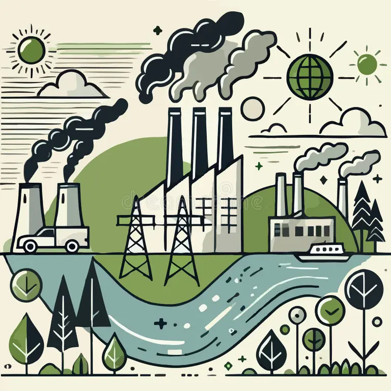

EcoCheck: Eficiência Industrial
Diagnóstico rápido para uma operação mais sustentável e econônomica no chão de fábrica.
Pequenas atitudes, grandes economias: Avalie agora o potencial de sustentabilidade do seu setor!
Ao adotar práticas sustentáveis, você garante benefícios como:
- ✓ Diminuição do desperdício
- ✓ Redução de custos operacionais
- ✓ Melhora na eficiência da empresa
- ✓ Atrai parceiros e clientes conscientes
